Two launch vehicles, two recovery philosophies. A 50 m methalox ship that lands on its own legs behind a blast berm, and a 67 m booster that flies back to be caught in a net. Both fly every Mars afternoon on a schedule — and every number on this page traces back to a simulation run.
The rockets district is two vehicles, two pads, and one spare engine on a service cradle.
The ship (veh-rocket-01) is a 50 m, Ø9 m methalox upper stage standing on six legs: 1200 t of propellant, six full-flow staged-combustion engines (3 sea-level gimballed + 3 vacuum), black tiles on the windward half, four body flaps, and a modeled interior — from the methane downcomer threading the LOX tank up to a four-deck crew section whose floors align with the exterior hatch and window band.
It sits on its own launch-and-recovery site (ops-spaceport-01): a Ø40 m microwave-sintered pad, a 60 m-diameter, 4 m blast berm, a 45 m service tower whose two swing arms index to the ship's quick-disconnect panel (5 m) and crew hatch (36.8 m), cryo tanks, a half-buried control bunker, and a fire garage. The site sits ~900 m from the city — a distance the plume analysis below justifies to the metre.
The booster (veh-rocket-02) is a 67 m single-core launcher on the eastern pad (ops-spaceport-02), recovered without legs: it flies back and is caught in a cable net strung between four lattice towers, hanging by its grid fins. Both vehicles run automated daily demos — the booster launches at 14:00 local solar time, the ship hops at 15:30.
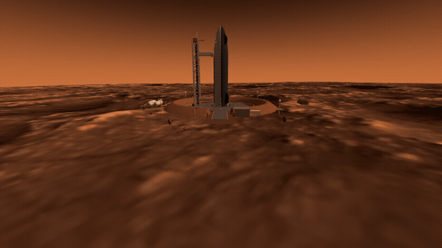
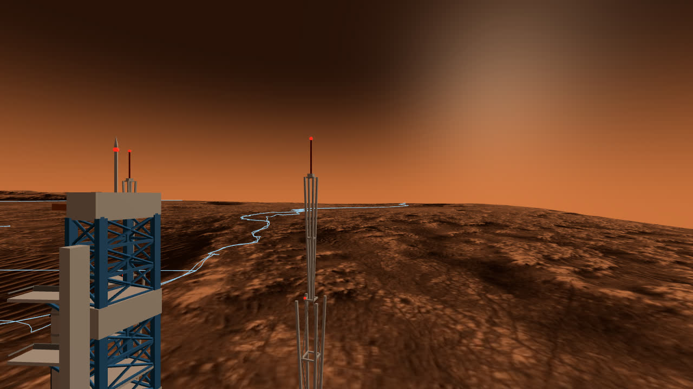
The recovery chain was simulated end-to-end — six dynamics runs plus one finite-element thermal study, each phase handing its final state to the next.
Entry is Mars-steep. Arriving hyperbolic at 5.7 km/s, every Earth-intuition entry angle between −3.5° and −9° skips off the atmosphere — thin air plus lift pushes the trajectory back out. The feasible corridor is just −13°…−12°: shallower skips, steeper exceeds 5 g₀. At −13° the ship sees 4.9 g₀ and 376 kW/m² peak heating, then falls to a ~400 m/s terminal velocity. There is no parachute regime here.
The flip costs altitude, not propellant. Rotating belly-flop to vertical takes 3.6 s with thrust-vector control saturated at ±15° — and the ship falls 1.4 km while doing it. Minimum ignition altitude: 4.0 km. The 1-DOF landing model had assumed 2.6 km; adding pitch dynamics killed that number.
It cannot hover. One engine throttled to its 40% floor still gives thrust-to-weight 1.13 on Mars. So the landing is one continuous deceleration to touchdown at 1.9 m/s — 38 t of header-tank propellant, 24% margin. On the ground, the loaded ship (CG at 26 m on a 5.9 m leg radius) tips over beyond an 11° slope; the pad is graded well under 7°. And the entry heat pulse, fed into a tile-plus-steel stack in a finite-element solve, leaves the steel wall at just 300 K behind a 3 cm tile — Mars entry is thermally mild; the tiles are really sized by Earth return.
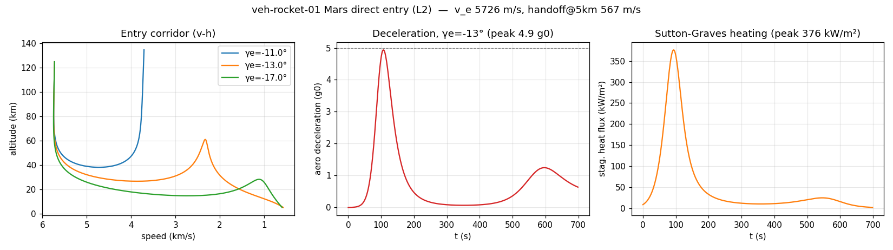
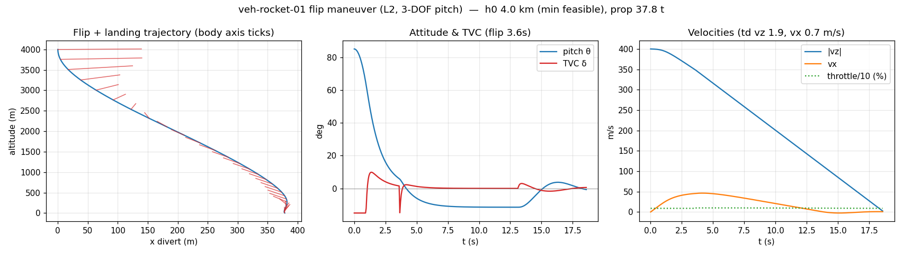
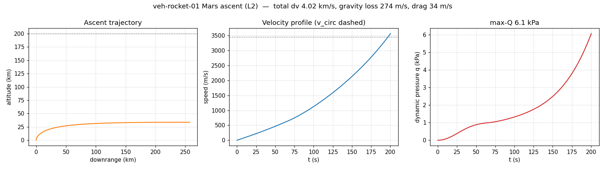
And the ground fights back. A landing engine is also a sandblaster. Below ~180 m the ship descends inside its own dust storm; below ~23 m bare regolith would crater. At touchdown the pad sees ~1.4 MPa — every erosion threshold exceeded — which is why the pad is microwave-sintered rock, not graded soil. Ejected grains fly ballistically for hundreds of metres to kilometres in the thin air; the 4 m berm intercepts everything launched below 6.3°, and the site sits ~900 m from the city. The same analysis flagged the engine display stand parked 22 m from the ship's old parking spot as fine for a static exhibit, unacceptable for operations — so the whole complex moved out here.
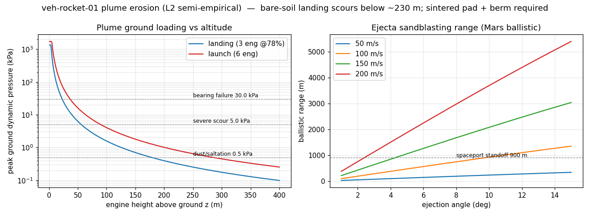
The second line takes the opposite bet: no legs, no pad landing — fly home and hang in a net.
The 298 t booster spends 4.13 km/s reaching staging, flips, and burns back with a 13% propellant reserve. Its grid fins do double duty: aerodynamic control on the way down, then catch hooks at the very end — the vehicle is Ø5 m against a 9×11 m net mesh, so what actually arrests it is the hook-on-cable interface, not the net fabric.
The flight itself is a chain of three burns. Staging is deliberately low and lofted — 1000 m/s at 38 km, flight-path angle 26° — because hang time is what makes flying home cheap: the first, flat staging attempt priced boostback at 1.85 km/s; the lofted one costs 1.0. Separation is hot staging in the CZ tradition: momentum-consistent springs push 2 m/s, the vacuum engine lights 0.5 s after unlock and vents through the interstage grilles. The boostback cutoff aims not at the pad but at a +518 m offset calibrated by flying the whole trajectory twice — the ballistic predictor knows nothing about the minute of hover drift the landing burn adds. A ZEM/ZEV terminal law then kills 204 m/s of sideways drift in 24 s.
The landing burn is never allowed to hover — at the 40% throttle floor the near-empty booster out-thrusts its own weight — so guidance pins the deceleration profile to the floor and shuts the engine down 0.5 m above the cables: the last half-metre is a free fall onto the hooks at 4.1 m/s, and no plume ever touches the net. A 500-run Monte Carlo — with navigation errors injected into what the guidance sees, not just into the physics — puts touchdown dispersion at σ = 0.55 m and catch success at 100%. Peak hook load is 95 kN with a 2.6× margin, using constant-force winches rather than elastic cables (which would have tripled the dynamic load factor); the winch then pays out 0.8 m of cable until the nozzles rest on the deck scorch mark. Each launch costs 215 t of ISRU propellant and 1174 MWh — at 200 kWe that is 3.3 launches per synodic window.
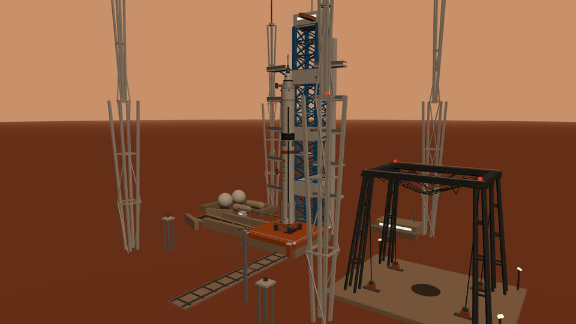
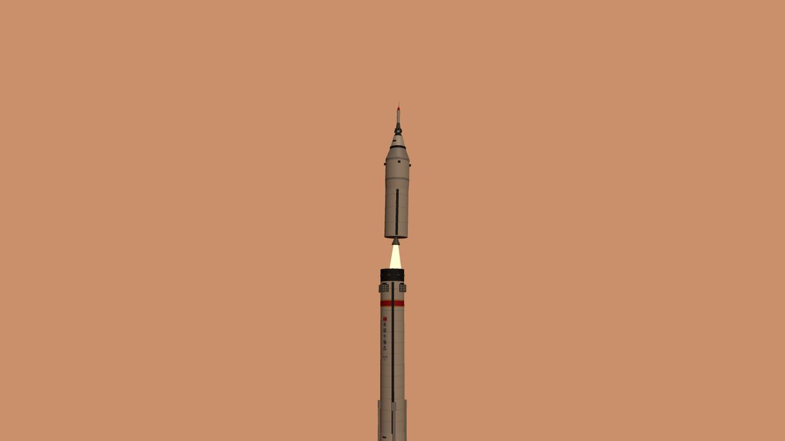
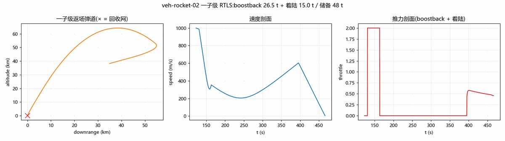
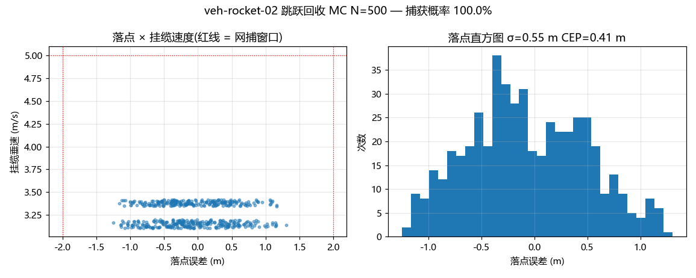
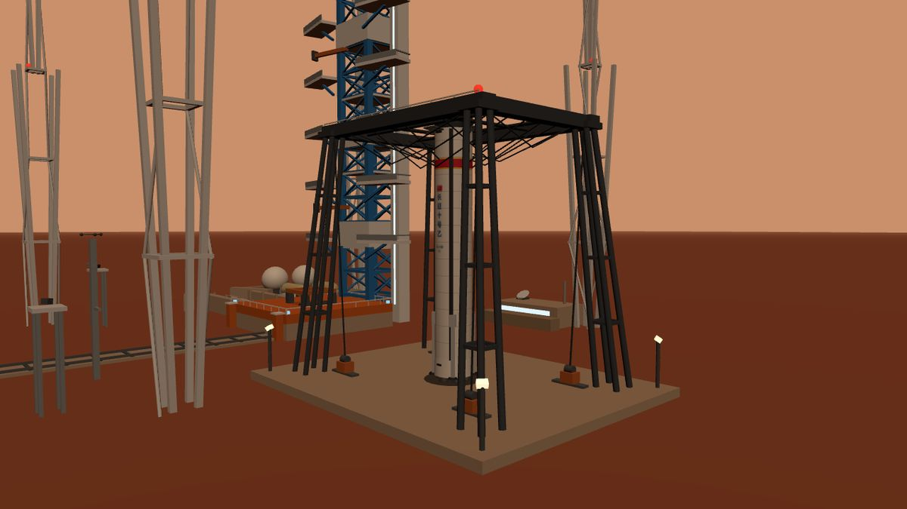
Every number above, and which run produced it. Ship runs are …_01, booster runs …_02.
| Claim | Value | Produced by |
|---|---|---|
| Surface→LMO Δv, integrated | 4.02 km/s | scripts/sim_ascent_veh_rocket_01.py |
| Gravity / drag loss on ascent | 274 / 34 m/s | scripts/sim_ascent_veh_rocket_01.py |
| Ascent max-Q | 6.1 kPa | scripts/sim_ascent_veh_rocket_01.py |
| Entry corridor (no skip, ≤5 g₀) | −13°…−12° | scripts/sim_entry_veh_rocket_01.py |
| Peak entry heating / load factor | 376 kW/m² / 4.9 g₀ | scripts/sim_entry_veh_rocket_01.py |
| Flip rotation / altitude lost | 3.6 s / 1.4 km | scripts/sim_flip_veh_rocket_01.py |
| Minimum flip-ignition altitude | 4.0 km | scripts/sim_flip_veh_rocket_01.py |
| Landing-burn propellant / touchdown | 37.8 t / 1.9 m/s | scripts/sim_flip_veh_rocket_01.py + sim_descent_veh_rocket_01.py |
| Hover feasibility, 1 engine @ 40% | T/W 1.13 → none | scripts/sim_descent_veh_rocket_01.py |
| Tip-over slope limit, loaded | 11.0° | scripts/sim_tipover_veh_rocket_01.py |
| Pad load, touchdown / launch | 1.4 / 1.7 MPa | scripts/sim_plume_veh_rocket_01.py |
| Berm ejecta intercept angle | ≤6.3° | scripts/sim_plume_veh_rocket_01.py |
| Steel wall peak behind 3 cm tile | 300 K | comsol/tps_tile.java (+ FD cross-check <1%) |
| Return payload, full tanks → TEI | 133 t | scripts/sim_mission_veh_rocket_01.py |
| Booster GLOW / ascent Δv | 298 t / 4.13 km/s | scripts/sim_ascent_veh_rocket_02.py |
| Boostback propellant reserve | 13% | scripts/sim_boostback_veh_rocket_02.py |
| Touchdown error at the net | 0.19 m | scripts/sim_boostback_veh_rocket_02.py |
| Hook-on-cable speed (engine cut 0.5 m up) | 4.1 m/s | scripts/sim_boostback_veh_rocket_02.py |
| Touchdown dispersion (nav errors in loop) | σ 0.55 m | scripts/sim_dispersion_veh_rocket_02.py |
| Net-catch success | 100% (N=500) | scripts/sim_dispersion_veh_rocket_02.py |
| Peak hook load at catch | 95 kN (2.6×) | scripts/sim_catch_veh_rocket_02.py |
| Grid-fin authority in landing profile | <20% | scripts/sim_gridfin_veh_rocket_02.py |
| ISRU cost per booster launch | 215 t / 1174 MWh | scripts/sim_isru_veh_rocket_02.py |
The honest section. Each of these cost a rework round.
The 4.59 km/s that wasn't. The first ascent run cut the engine the moment apoapsis touched 200 km — mid-loft, at 1073 m/s, leaving a 3.2 km/s circularization bill and a periapsis 3388 km inside the planet. Printing the periapsis exposed it; switching to an active pitch program and minimizing total Δv gave the real 4.02.
Every entry angle skipped. The first corridor sweep used Earth-intuition angles (−3.5°…−9°). All of them bounced off. That wasn't a bug — Mars entry corridors are genuinely steep — but it took a diagnostic sweep to trust it.
The flip deleted a baseline. The 1-DOF landing model happily ignited at 2.6 km. Adding pitch dynamics showed the flip itself eats 1.4 km, moving minimum ignition to 4.0 km. Every downstream card quoting 2.6 km had to be swept and corrected — twice we found stale numbers surviving in documentation after the sim that produced them was superseded.
The cross-check that overflowed. The independent finite-difference model (written to verify the FEM thermal solve) blew up to 10119 K on its first run — explicit-scheme timestep instability at the tile/steel interface. With dt inside the stability bound of the stiffest layer, the two solvers agreed to <1%.
The landing loop that lagged into the net. The booster's first landing controller tracked a √-shaped velocity profile with pure proportional feedback — which carries a built-in steady-state lag of a_ref/K. It arrived at the net still doing 17 m/s. The fix was not more gain but a better profile: an energy-consistent curve with a constant feed-forward term. Same gains, 3 m/s.
The booster that ran away — upward. A nearly-empty stage at the 40% throttle floor out-thrusts its own weight. When the profile asked for less braking than the floor could give, the clamp over-decelerated, the booster stopped mid-air, then climbed while burning its landing reserve dry. Fix: pin the profile's deceleration to the throttle floor at final mass, add a shutdown-and-relight guard, and cut the engine half a metre above the cables.
Aimed perfectly, missed by 6.4 km. Boostback cutoff used a ballistic impact predictor — which knows nothing about re-entry drag or the extra minute of drift the landing burn adds. "Exactly at the pad" landed 6.4 km past it, still moving 196 m/s sideways, because a saturated PD can serve position or velocity but not both. Fix: calibrate a +518 m aim offset by flying the nominal trajectory twice, and replace PD with a ZEM/ZEV law that zeroes both by the time-to-go.
Cold staging lit an engine in the booster's face. The first cut coasted three seconds after spring separation before igniting the upper stage — six metres of gap against a nine-metre plume, and the spring impulse didn't even conserve momentum. A reviewer caught it frame-by-frame in the delivery GIF. Fix: hot staging (ignition 0.5 s after unlock, venting through the interstage grilles) and a momentum-consistent spring split.
Small traps, real hours: the FEM tool's 1-D geometry API rejects a points list (two intervals with shared endpoints work); the viewer's bounding-box computes hidden meshes, so idle plume cones must be scaled to 0.001 rather than hidden — or the engine lifts the whole rocket ten metres; and a review pass caught two knowledge cards flatly contradicting each other on whether the ship can hover (it cannot).
Run the city locally and the rockets fly for you.
Serve the repo root and open /viewer/. Deep-link straight to the district with ?inspect=ops-spaceport-01 or ?inspect=veh-rocket-02; press V to orbit an asset and you'll get its action buttons — 发射回收 flies the ship's full launch-and-landing cycle, 发射 sends the booster into its net-catch sequence. Or just wait: the booster flies daily at 14:00 local solar time, the ship at 15:30. Walk within 30 m of the pad, berm, tower, tanks or bunker and their knowledge cards pop up with the same numbers as this page.